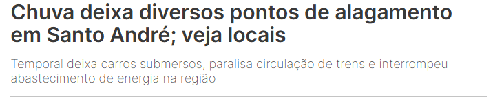

Os bueiros entupidos representam uma das principais causas de alagamentos e inundações nas áreas urbanas brasileiras. Reportagens do G1, Estadão e Folha de S.Paulo mostram que essa situação é crônica e recorrente em várias cidades, trazendo prejuízos materiais, riscos à saúde pública e à mobilidade urbana. Em Pontal (SP), segundo o G1, moradores do centro da cidade enfrentaram sérios transtornos devido ao entupimento de bueiros. A água da chuva não conseguia escoar, transbordando pelas ruas e invadindo casas e comércios. Além dos danos materiais, houve riscos de contaminação por contato com a água suja, que pode conter esgoto, lixo e substâncias tóxicas. Os moradores relataram que o problema já ocorria há anos, indicando negligência do poder público em realizar manutenções preventivas. Na cidade de São Paulo, a reportagem do Estadão mostra que, há décadas, um bueiro na região da Ponte João Dias tem causado alagamentos constantes, especialmente em dias de fortes chuvas. Mesmo com promessas de reformas e ações paliativas da prefeitura, o problema persiste. Isso evidencia a falta de planejamento urbano de longo prazo, além de má gestão dos recursos públicos voltados à infraestrutura de drenagem.

Já a matéria da Folha de S.Paulo revela outro fator agravante: o acúmulo de lixo e entulho nas ruas, que acaba sendo levado pela chuva para os bueiros, entupindo-os. Materiais como garrafas PET, sacolas plásticas, papel, embalagens e até móveis descartados irregularmente bloqueiam a passagem da água, transformando calçadas e avenidas em verdadeiros rios urbanos. Essa situação, além de danosa, também é reflexo de uma questão cultural e educacional, pois muitos cidadãos ainda descartam resíduos de forma irresponsável. Os impactos vão muito além dos transtornos pontuais. Enchentes causadas por bueiros obstruídos afetam diretamente o trânsito, o comércio local, a saúde da população e a infraestrutura urbana. Em algumas regiões, a água acumulada danifica o asfalto, interfere no transporte público e provoca perdas econômicas consideráveis para lojistas e moradores. Além disso, a exposição frequente à água contaminada favorece a proliferação de doenças, como leptospirose e dengue. Para enfrentar esse problema de forma eficaz, é necessário um conjunto de ações integradas: Manutenção periódica dos sistemas de drenagem, com limpeza frequente de bueiros e galerias pluviais; Campanhas de conscientização ambiental, para estimular o descarte correto de lixo e a preservação dos espaços públicos; Investimentos em infraestrutura urbana, com projetos de drenagem moderna e sustentável; Adoção de tecnologias de monitoramento inteligente, como sensores em bueiros que alertem sobre entupimentos ou níveis críticos de água (como em projetos de cidades inteligentes); Fiscalização e penalidades para quem descartar lixo irregularmente em vias públicas.
